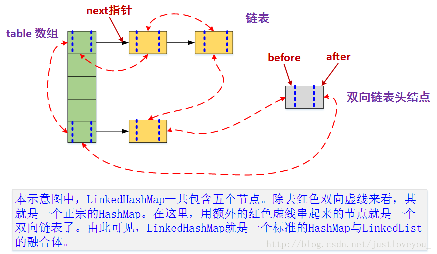

Glide图片加载框架分析
Glide是一个优秀的android图片加载库，优点十分明显
- 生命周期集成
- 高效的缓存策略
生命周期
Glide加载图片的时候，会关联页面的生命周期，灵活加载。
Glide加载图片最基本的方式
1 | Glide.with(context).load("xxx")into(imageView); |
with()方法这个方法有多个重载，可以传入Context、Activity、Fragment、View等，但是内部调用方法都是一样的，只是参数有所不同，这里以传入FragmentActivity为例。
1 | @NonNull |
这里先获取类RequestManagerRetriever对象，然后调用了它的get()方法。
1 | RequestManagerRetriever#get() |
这里先判断是否在子线程，这个分支先不讲，先看看在主线程中的逻辑：先获取当前Activity的FragmentManager，，然后调用supportFragmentGet()
supportFragmentGet
返回RequestManager
1 | RequestManagerRetriever#supportFragmentGet() |
getSupportRequestManagerFragment
返回SupportRequestManagerFragment。这个类就是无界面的Fragment
1 | RequestManagerRetriever#getSupportRequestManagerFragment() |
这段代码是是为了保持同一个Activity或者Fragment即使多次调用Glide加载图片也只会有一个无UI的Fragment对象存在。
1 | Glide.with(this).load(url_1).into(mImageView_1); |
比如我们在执行这两行代码时，加载mImageView_1提交Fragment时，fm.findFragmentByTag(FRAGMENT_TAG)可能还未null，此时handler.obtainMessage肯定也还未执行，所以pendingSupportRequestManagerFragments的缓存中肯定有加载mImageView_1时的无UI的Fragment，所以双重空判断保证了无UI Fragment的唯一性。
SupportRequestManagerFragment
Glide内部创建无UI的fragment，会与当前Activity绑定，与RequestManager绑定，传递页面的生命周期。其中SupportRequestManagerFragment是v4包下的Fragment，RequestManagerFragment：Glide是android.app.Fragment。
我们看下其中关键的成员变量
rootRequestManagerFragment
1
2
3
4
5
6
7
8
9
10
11
12
13
14@Override
public void onAttach(Context context) {
super.onAttach(context);
//得到根FragmentManager
FragmentManager rootFragmentManager = getRootFragmentManager(this);
if (rootFragmentManager == null) {
return;
}
try {
//注册rootFragmentManager
registerFragmentWithRoot(getContext(), rootFragmentManager);
} catch (IllegalStateException e) {
}
}1
2
3
4
5
6
7
8
9
10
11
12
13
14private void registerFragmentWithRoot(
@NonNull Context context, @NonNull FragmentManager fragmentManager) {
unregisterFragmentWithRoot();
//得到rootRequestManagerFragment
rootRequestManagerFragment =
Glide.get(context)
.getRequestManagerRetriever()
.getSupportRequestManagerFragment(context, fragmentManager);
//如果当前 SupportRequestManagerFragment不是 rootRequestManagerFragment，那么添加到数组中
if (!equals(rootRequestManagerFragment)) {
rootRequestManagerFragment.addChildRequestManagerFragment(this);
}
}1
2
3
4
5
6
7
8
9
10
11
12//如果rootRequestManagerFragment存在，先移除当前fragment，并root制为null
private void unregisterFragmentWithRoot() {
if (rootRequestManagerFragment != null) {
rootRequestManagerFragment.removeChildRequestManagerFragment(this);
rootRequestManagerFragment = null;
}
}
//添加到childRequestManagerFragments
private void addChildRequestManagerFragment(SupportRequestManagerFragment child) {
childRequestManagerFragments.add(child);
}- 可以看到，不管当前的RequestManagerFragment是通过何种方式创建的，都会在OnAttach时，拿到当前所绑定的Activity的FragmentManager来初始化一个RequestManagerFragment，这个RequestManagerFragment有可能是自身，有可能已经被初始化过了，比如是通过with(Activity activity)的方式初始化的，那么很显然
RequestManagerRetriever.get().getRequestManagerFragment(getActivity().getFragmentManager());这句代码拿到的会是自己本身 - 如果是通过with(Fragment fragment)的形式创建的，rootRequestManagerFragment将指向当前fragment绑定到Activity所绑定的RequestManagerFragment，如果该Activity没有绑定过，那么会开启事务绑定一个RequestManagerFragment。并且如果自己不是rootRequestManagerFragment的话，那么将会把自己保存到rootRequestManagerFragment中的一个集合.
- 简而言之，Glide会为Activity创建一个RequestManagerFragment做为rootFragment，并保存该Activity底下所有Fragment（如果有的话）所创建的RequestManagerFragment。
- 可以看到，不管当前的RequestManagerFragment是通过何种方式创建的，都会在OnAttach时，拿到当前所绑定的Activity的FragmentManager来初始化一个RequestManagerFragment，这个RequestManagerFragment有可能是自身，有可能已经被初始化过了，比如是通过with(Activity activity)的方式初始化的，那么很显然
RequestManagerTreeNode
RequestManagerTreeNode用来获取绑定该RequestManagerFragment的Fragment的所有子Fragment所绑定的RequestManagerFragment所绑定的RequestManager
RequestManager
RequestManager是一个非常核心的类，并且还实现了LifecycleListener来处理请求的生命周期。上述代码在创建RequestManager时，传递了3个参数，分别是context，前面分析过的初始化RequestManagerFragment所创建的LifeCycle和RequestManagerTreeNode。
1 | RequestManager( |
构建函数传递了glide，lifecycle，treeNode等相关信息，lifecycle.addListener(this)进行了正式的回调。
RequestTracker即所有请求操作的真正处理者，所有Request的暂停取消执行操作都由RequestTracker来完成，如RequestManager暂停请求的实现：
1 | public void pauseRequests() { |
- 至此，我们可以清晰的了解到Glide是如何在加载图片时进行Activity/Fragment的生命周期的关联。
缓存策略
在缓存这一功能上，Glide将它分成了两个模块，一个是内存缓存，一个是硬盘缓存。同时内存缓存又分为两级，一级是LruCache缓存，一级是弱引用缓存。
内存缓存的作用：防止应用重复将图片数据读取到内存当中。
LruCache缓存：不在使用中的图片使用LruCache来进行缓存。
弱引用缓存：把正在使用中的图片使用弱引用来进行缓存。
【这样的目的保护正在使用的资源不会被LruCache算法回收。】
硬盘缓存的作用：防止应用重复从网络或其他地方重复下载和读取数据。
默认情况下，Glide 会在开始一个新的图片请求之前检查以下多级的缓存：
内存缓存 (Memory cache) - 该图片是否最近被加载过并仍存在于内存中？即LruCache缓存。
活动资源 (Active Resources) - 现在是否有另一个 View 正在展示这张图片？也就是弱引用缓存。
资源类型（Resource） - 该图片是否之前曾被解码、转换并写入过磁盘缓存？
数据来源 (Data) - 构建这个图片的资源是否之前曾被写入过文件缓存？
前两步检查图片是否在内存中，如果是则直接返回图片。后两步则检查图片是否在磁盘上，以便快速但异步地返回图片。
如果四个步骤都未能找到图片，则Glide会返回到原始资源以取回数据（原始文件，Uri, Url等）
内存缓存
Engine 的 load 方法
1 | public <R> LoadStatus load( |
EngineKey:作为缓存的key，由图片大小，路径，key，option等综合生成
1 | private EngineResource<?> loadFromMemory( |
主要实现类是：LruResourceCache
LruCache的实现原理
LruCache的核心思想很好理解，就是要维护一个缓存对象列表，其中对象列表的排列方式是按照访问顺序实现的，即一直没访问的对象，将放在队尾，即将被淘汰。而最近访问的对象将放在队头，最后被淘汰。底层实现的数据结构是LinkedHashMap.
LinkedHashMap
LinkedHashMap是由数组+双向链表的数据结构来实现的。其中双向链表的结构可以实现访问顺序和插入顺序，使得LinkedHashMap中的<key,value>对按照一定顺序排列起来。

弱引用缓存作用？
- 代表正在被加载的图片缓存，新加载到图片会加入到该缓存中
- 如果图片进入到了销毁阶段，会进入到lru缓存中
- 如果图片被gc了，也会进入到lru缓存中
lru缓存作用
- 表示最近最少使用过该图片
磁盘缓存
在 Engine 的 load 方法中，如果在弱引用的 HashMap 和 LruCache 中都获取不到资源，则调用 waitForExistingOrStartNewJob 方法
磁盘缓存即是内容保存在本地磁盘中。
1 | private <R> LoadStatus waitForExistingOrStartNewJob(...) { |
总结
glide4 缓存主要分为三个 activiteResources(弱引用缓存) MemoryCache(Lru缓存) DiskCache(磁盘缓存) 还有一个http网络缓存, 不多做介绍
首先弱引用缓存代表的是当前正在使用的缓存, 请求图片之后 会分为两个步骤, 1.进入磁盘缓存,2进入弱引用缓存。 在弱引用缓存中使用一个计数器来维护当前资源的是否被使用,如果计数器=0说明当前资源已经不被使用了,则进入Lru缓存,Lru缓存是glide使用linkhashmap来维护的,如果lru满了则删除最长时间未使用的。
如果一个资源加载的时候在弱引用缓存中找不到,就会到lru缓存中查找,如果没找到就去磁盘缓存找,不管在lru中找到 还是在磁盘中找到, 都会把命中的缓存,放在弱引用缓存中.
glide设计的三层缓存模型, 其中内存缓存 减轻了磁盘缓存的压力,避免io操作,而弱引用缓存则减轻了 lru缓存的压力,避免lru过满导致频繁gc,并且提高查找效率
另外再说下 glide4 五种缓存策略 data source all no automic
data则是缓存住原始图片资源, source则是缓存住变换后的资源(glide 会针对imageview的大小对图片预先变换,避免小imageview加载大图片浪费内存)
all 就是两种都缓存, no就是不缓存 ,automiic 则比较特殊,会缓存data 根据图片的编码 自行判断是否缓存resource
面试总结
- 为什么使用Glide？
- 使用简单，功能丰富
- 管理生命周期
- 多级缓存